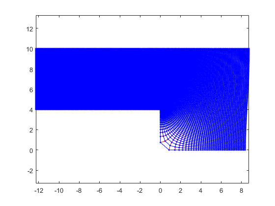
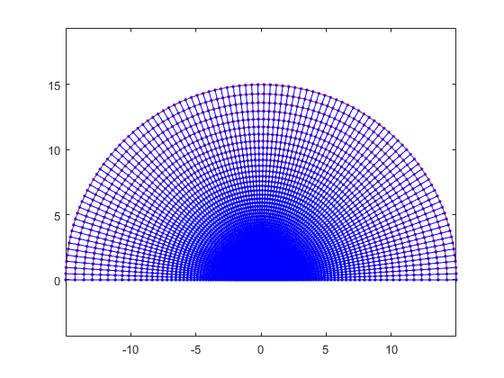

Contents
H-Zone parameters
H = 10;
h = 6 ;
Mesh parameters
N_r = 200;
N_theta = 100;
r_span = [0.001,15];
theta_span = [0+eps,pi-eps];
Generate mesh for Jukowski Airfoil
r = meshfun(r_span,N_r);
theta = linspace(theta_span(1),theta_span(2),N_theta);
[R,THETA] = meshgrid(r,theta);
x = R.*cos(THETA) ;
y = R.*sin(THETA) ;
W = x + sqrt(-1)*y;
b = H/h;
t = sqrt( (W-b^2) ./ (W-1) );
t1 = (1+t)./(1-t);
t2 = (b+t)./(b-t);
Z = H/pi*log(t1) - h/pi*log(t2);
X = real(Z);
Y = imag(Z);
plot mesh
[imax jmax] = size(X);
figure('Color',[1 1 1]);
for j = 1:jmax
for i = 1:imax-1
plot([X(i,j),X(i+1,j)],[Y(i,j),Y(i+1,j)],'r.-')
hold on;
end
end
for i = 1:imax
for j = 1:jmax - 1
plot([X(i,j),X(i,j+1)],[Y(i,j),Y(i,j+1)],'b.-')
end
end
axis equal
hold off
figure('Color',[1 1 1]);
for j = 1:jmax
for i = 1:imax-1
plot([x(i,j),x(i+1,j)],[y(i,j),y(i+1,j)],'r.-')
hold on;
end
end
for i = 1:imax
for j = 1:jmax - 1
plot([x(i,j),x(i,j+1)],[y(i,j),y(i,j+1)],'b.-')
end
end
axis equal
hold off
 
Output Mesh in tecplot file form
fp = fopen('ChannelHMesh.dat','w');
fprintf(fp,'Title = ChannelHMesh\n');
fprintf(fp,'VARIABLES = "X", "Y"\n');
fprintf(fp,'ZONE I =%d, J =%d, F = point\n',imax,jmax);
for j = 1:jmax
for i = 1:imax
fprintf(fp,'%e, %e\n',X(i,j),Y(i,j));
end
end
fclose(fp);